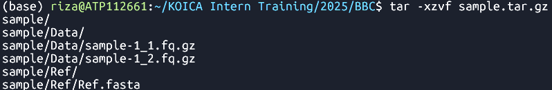
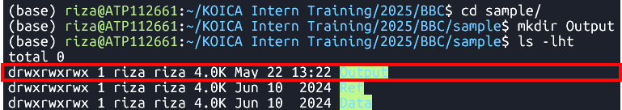
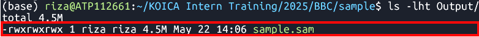
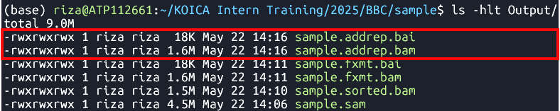

Basic NGS Data Analysis
Hands-on
Variant Calling Pipeline
Description
This is a pipeline for variant calling based on best practices for GATK4
Requirements and Preparation
- Ubuntu installation on your laptop/workstation
- Installation of the necessary tools
- BWA, FastP, FastQC, GATK4, Picard, Samtools
- Demo dataset
- Reference:
Ref.fasta - Data:
sample-1_1.fq.gz sample-1_2.fq.gz
Pipeline

Data Preparation and Import
- Unpack the sample dataset archive.
-
tar -xzvf sample.tar.gz Extracts the
sample.tar.gzarchive- 
- sample ├── Data │ ├── sample-1_1.fq.gz │ └── sample-1_2.fq.gz └── Ref └── Ref.fasta 3 directories, 3 files
- Create
Outputdirectory. -
cd sample -
mkdir Output Changes the current directory to
sampleand creates a new directory namedOutput
inside it.- 
Command
Output
Command
Output
Reference Data Preparation (Indexing)
BWA Index
Syntax
-
bwa index Ref/Ref.fasta Indexes the
Ref.fastafile using the BWA tool- Files:

Samtools faidx
Syntax
-
samtools faidx Ref/Ref.fasta Indexes the
Ref.fastafile using samtools- File:
Ref.fasta.fai 
Picard CreateSequenceDictionary
Syntax
-
java -jar $PICARD CreateSequenceDictionary -REFERENCE Ref/Ref.fasta -OUTPUT Ref/Ref.dict Creates a sequence dictionary for
Ref.fasta- File:
Ref.dict 
| bwa index [Reference.fasta] |
Command
Output
Ref.fasta.bwtRef.fasta.pacRef.fasta.annRef.fasta.ambRef.fasta.sa
| samtools faidx [Reference.fasta] |
Command
Output
| java -jar $PICARD CreateSequenceDictionary -REFERENCE [Reference.fasta] -OUTPUT [Reference.dict] |
Command
Output
Raw Read Preparation
Quality Check
Syntax
-
fastqc Data/sample-1_1.fq.gz Data/sample-1_2.fq.gz Runs FastQC analysis on files
sample-1_1.fq.gzandsample-1_2.fq.gz- File:
FastQC reports 
Cleaning
Syntax
-
fastp -i Data/sample-1_1.fq.gz -I Data/sample-1_2.fq.gz -o Data/sample-1_1-cleaned.fq.gz -O Data/sample-1_2-cleaned.fq.gz Clean reads
sample-1_1.fq.gzandsample-1_2.fq.gz- File:
*-cleaned.fq.gz 
| fastqc [in1.fq] [in2.fq] [...inN.fq] |
Command
Output
| fastp -i [in1.fq] -I [in2.fq] -o [out1.fq] -O [out2.fq] |
Command
Output
Alignment to Reference Genome
Syntax| bwa mem arguments [Reference.fasta] [in1.fq] [in2.fq] > [aln.sam] |
Command
-
bwa mem -t 8 Ref/Ref.fasta Data/sample-1_1-cleaned.fq.gz Data/sample-1_2-cleaned.fq.gz > Output/sample.sam Align cleaned reads
sample-1_1-cleaned.fq.gzandsample-1_2-cleaned.fq.gz
to a reference genomeRef.fasta
Output
- File:
sample.sam - 
Sorting
Tool:SortSam
Syntax| java -jar $GATK SortSam --INPUT [aln.sam] --OUTPUT [sorted.bam] -SORT_ORDER [coordinate] |
Command
-
java -jar $GATK SortSam --INPUT Output/sample.sam --OUTPUT Output/sample.sorted.bam -SORT_ORDER coordinate Sorts
sample.samfile by coordinate.
Output
- File:
sample.sorted.bam 
Fix mate information
Tool:FixMateInformation
Syntax| java -jar $GATK FixMateInformation --INPUT [sorted.bam] --OUTPUT [fxmt.bam] --CREATE_INDEX [TRUE] --VALIDATION_STRINGENCY [LENIENT] |
Command
-
java -jar $GATK FixMateInformation --INPUT Output/sample.sorted.bam --OUTPUT Output/sample.fxmt.bam --CREATE_INDEX TRUE --VALIDATION_STRINGENCY LENIENT Fixes mate information in a sorted BAM file
sample.sorted.bam.
Output
- Files:

sample.fxmt.bamsample.fxmt.baiAdd Read Group Information
Syntax| java -jar $GATK AddOrReplaceReadGroups --INPUT [fxmt.bam] --OUTPUT [addrep.bam] --RGID [ID] --RGPU [Unit] --RGLB [Library] -PL [Platform] -SM [SampleName] -CN [CenterName] --VALIDATION_STRINGENCY [LENIENT] --CREATE_INDEX [TRUE] |
Command
-
java -jar $GATK AddOrReplaceReadGroups --INPUT Output/sample.fxmt.bam --OUTPUT Output/sample.addrep.bam --RGID run100 --RGPU unit1 --RGLB lib1 -PL Illumina -SM sample -CN CN --VALIDATION_STRINGENCY LENIENT --CREATE_INDEX TRUE Adds read group information in
sample.fxmt.bamfile.
Output
- Files:
- 
sample.addrep.bamsample.addrep.baiMark Duplicates
Tool:MarkDuplicates
Syntax| java -jar $GATK MarkDuplicates --INPUT [addrep.bam] --OUTPUT [mkdup.bam] --CREATE_INDEX [TRUE] --VALIDATION_STRINGENCY [LENIENT] --METRICS_FILE [mkdup.metrics] --MAX_FILE_HANDLES_FOR_READ_ENDS_MAP [1000] |
Command
-
java -jar $GATK MarkDuplicates --INPUT Output/sample.addrep.bam --OUTPUT Output/sample.mkdup.bam --VALIDATION_STRINGENCY LENIENT --CREATE_INDEX TRUE --METRICS_FILE Output/sample.mkdup.metrics --MAX_FILE_HANDLES_FOR_READ_ENDS_MAP 1000 Identifies and marks duplicate reads in
sample.addrep.bamfile.
Output
- Files:

sample.mkdup.bamsample.mkdup.baisample.mkdup.metricsMerging BAM Files (Optional)
Tool:samtools merge
Syntax| samtools merge [out.bam] [in1.bam] [in2.bam] |
Command
-
samtools merge SB4-1A_SHB134-11-44.mkdup.bam \ ./V300088030.4/Output/V300088030.4.mkdup.bam \ ./V300081906.4/Output/V300081906.4.mkdup.bam \ ./V300082057.1/Output/V300082057.1.mkdup.bam
Variant Calling
Tool:HaplotypeCaller
Syntax| java -jar $GATK HaplotypeCaller -R [Reference.fasta] -I [mkdup.bam] -O [file.g.vcf] -ERC [GVCF] --bam-output [file.bamout.bam] --showHidden [true] |
Command
-
java -jar $GATK HaplotypeCaller \
-R Ref/Ref.fasta \
-I Output/sample.mkdup.bam \
-O Output/sample.g.vcf \
-ERC GVCF \
--bam-output Output/sample.bamout.bam \
--showHidden true Performs variant calling on a BAM file
sample.mkdup.bamagainst a reference genome
Ref.fasta
Output
- Files:

sample.g.vcfsample.g.vcf.idxsample.bamout.bamsample.bamout.baiMerging GATK GVCFs
Tool:CombineGVCFS
Syntax| java -jar $GATK CombineGVCFS -R [Reference.fasta] -V [in1.g.vcf] -V [in2.g.vcf] -O [merged.g.vcf] |
Command
-
java -jar $GATK CombineGVCFs \
-R Ref/chr01.fa \
-V gvcfs/sample1.g.vcf \
-V gvcfs/sample2.g.vcf \
-V gvcfs/sample3.g.vcf \
-O Output/combined.g.vcf
Output
- File:
Combined GVCFs 
Genotyping GVCFs
Tool:GenotypeGVCFs
Syntax| java -jar $GATK GenotypeGVCFs -R [Reference.fasta] -V [input.g.vcf] -O [output.vcf] |
Command
-
java -jar $GATK GenotypeGVCFs -R Ref/chr01.fa -V Output/combined.g.vcf -O Output/combined.vcf
Output
- File:
Merged VCF